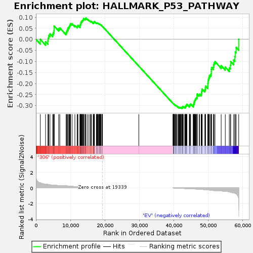
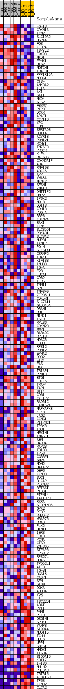
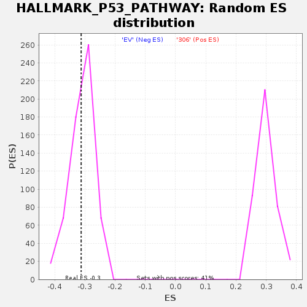

| | | Dataset | 306_EV_express.306_EV.cls#306_versus_EV |
| Phenotype | 306_EV.cls#306_versus_EV |
| Upregulated in class | EV |
| GeneSet | HALLMARK_P53_PATHWAY |
| Enrichment Score (ES) | -0.3122882 |
| Normalized Enrichment Score (NES) | -1.0095882 |
| Nominal p-value | 0.4057239 |
| FDR q-value | 0.78754616 |
| FWER p-Value | 1.0 |
Table: GSEA Results Summary

Fig 1: Enrichment plot: HALLMARK_P53_PATHWAY
Profile of the Running ES Score & Positions of GeneSet Members on the Rank Ordered List
| SYMBOL | TITLE | RANK IN GENE LIST | RANK METRIC SCORE | RUNNING ES | CORE ENRICHMENT | | 1 | FGF13 | NNN | 1273 | 0.652 | -0.0002 | No |
| 2 | CDKN1A | NNN | 2793 | 0.475 | -0.0104 | No |
| 3 | TCN2 | NNN | 3485 | 0.450 | -0.0073 | No |
| 4 | SLC19A2 | NNN | 3555 | 0.442 | 0.0061 | No |
| 5 | HSPA4L | NNN | 3717 | 0.429 | 0.0175 | No |
| 6 | FOS | NNN | 4077 | 0.398 | 0.0246 | No |
| 7 | CEBPA | NNN | 4840 | 0.352 | 0.0232 | No |
| 8 | TSPYL2 | NNN | 5078 | 0.349 | 0.0307 | No |
| 9 | FOXO3 | NNN | 5245 | 0.337 | 0.0390 | No |
| 10 | MXD1 | NNN | 5278 | 0.335 | 0.0495 | No |
| 11 | EPHX1 | NNN | 5280 | 0.335 | 0.0606 | No |
| 12 | BTG2 | NNN | 6596 | 0.298 | 0.0480 | No |
| 13 | NOTCH1 | NNN | 6926 | 0.278 | 0.0516 | No |
| 14 | TRAFD1 | NNN | 8749 | 0.272 | 0.0295 | No |
| 15 | PPP1R15A | NNN | 8919 | 0.265 | 0.0354 | No |
| 16 | NDRG1 | NNN | 9062 | 0.258 | 0.0415 | No |
| 17 | CTSF | NNN | 9254 | 0.251 | 0.0465 | No |
| 18 | ANKRA2 | NNN | 9360 | 0.245 | 0.0528 | No |
| 19 | IL1A | NNN | 9614 | 0.238 | 0.0563 | No |
| 20 | AK1 | NNN | 9776 | 0.231 | 0.0612 | No |
| 21 | SAT1 | NNN | 9913 | 0.225 | 0.0663 | No |
| 22 | MXD4 | NNN | 10048 | 0.221 | 0.0713 | No |
| 23 | GLS2 | NNN | 10478 | 0.205 | 0.0708 | No |
| 24 | FBXW7 | NNN | 11297 | 0.183 | 0.0628 | No |
| 25 | PTPRE | NNN | 11947 | 0.162 | 0.0571 | No |
| 26 | DCXR | NNN | 12073 | 0.158 | 0.0602 | No |
| 27 | APAF1 | NNN | 12190 | 0.154 | 0.0633 | No |
| 28 | CCP110 | NNN | 12770 | 0.139 | 0.0580 | No |
| 29 | XPC | NNN | 12782 | 0.139 | 0.0624 | No |
| 30 | JUN | NNN | 12822 | 0.138 | 0.0663 | No |
| 31 | SERTAD3 | NNN | 13002 | 0.134 | 0.0677 | No |
| 32 | DDIT4 | NNN | 13027 | 0.133 | 0.0717 | No |
| 33 | ACVR1B | NNN | 13073 | 0.131 | 0.0752 | No |
| 34 | POM121 | NNN | 13111 | 0.130 | 0.0789 | No |
| 35 | RCHY1 | NNN | 13281 | 0.125 | 0.0802 | No |
| 36 | TM7SF3 | NNN | 13353 | 0.123 | 0.0830 | No |
| 37 | PROCR | NNN | 13503 | 0.120 | 0.0844 | No |
| 38 | KLF4 | NNN | 13595 | 0.118 | 0.0868 | No |
| 39 | RALGDS | NNN | 13695 | 0.115 | 0.0889 | No |
| 40 | CDKN2AIP | NNN | 13806 | 0.112 | 0.0907 | No |
| 41 | ADA | NNN | 13817 | 0.112 | 0.0942 | No |
| 42 | RNF19B | NNN | 14130 | 0.105 | 0.0924 | No |
| 43 | ABCC5 | NNN | 14357 | 0.100 | 0.0918 | No |
| 44 | APP | NNN | 14468 | 0.097 | 0.0931 | No |
| 45 | VWA5A | NNN | 14500 | 0.096 | 0.0958 | No |
| 46 | MKNK2 | NNN | 15003 | 0.085 | 0.0900 | No |
| 47 | SESN1 | NNN | 15412 | 0.080 | 0.0857 | No |
| 48 | ZMAT3 | NNN | 15834 | 0.071 | 0.0809 | No |
| 49 | DNTTIP2 | NNN | 15908 | 0.069 | 0.0819 | No |
| 50 | BMP2 | NNN | 16096 | 0.065 | 0.0809 | No |
| 51 | IP6K2 | NNN | 16606 | 0.059 | 0.0742 | No |
| 52 | NOL8 | NNN | 16688 | 0.057 | 0.0747 | No |
| 53 | DDIT3 | NNN | 16805 | 0.055 | 0.0745 | No |
| 54 | CDH13 | NNN | 16832 | 0.054 | 0.0759 | No |
| 55 | PDGFA | NNN | 16843 | 0.054 | 0.0775 | No |
| 56 | RRP8 | NNN | 16855 | 0.054 | 0.0791 | No |
| 57 | CDKN2A | NNN | 16924 | 0.052 | 0.0796 | No |
| 58 | BAK1 | NNN | 16964 | 0.051 | 0.0807 | No |
| 59 | CCNK | NNN | 17517 | 0.040 | 0.0726 | No |
| 60 | SLC35D1 | NNN | 17594 | 0.038 | 0.0725 | No |
| 61 | PRKAB1 | NNN | 17662 | 0.037 | 0.0726 | No |
| 62 | SLC3A2 | NNN | 17729 | 0.036 | 0.0727 | No |
| 63 | NUPR1 | NNN | 17745 | 0.035 | 0.0736 | No |
| 64 | TXNIP | NNN | 17842 | 0.033 | 0.0731 | No |
| 65 | POLH | NNN | 17878 | 0.033 | 0.0735 | No |
| 66 | SEC61A1 | NNN | 17912 | 0.032 | 0.0740 | No |
| 67 | CSRNP2 | NNN | 18131 | 0.028 | 0.0712 | No |
| 68 | IRAK1 | NNN | 18322 | 0.024 | 0.0688 | No |
| 69 | KIF13B | NNN | 18370 | 0.023 | 0.0687 | No |
| 70 | INHBB | NNN | 18416 | 0.022 | 0.0687 | No |
| 71 | TGFA | NNN | 18516 | 0.019 | 0.0677 | No |
| 72 | F2R | NNN | 18518 | 0.019 | 0.0683 | No |
| 73 | FUCA1 | NNN | 18538 | 0.019 | 0.0686 | No |
| 74 | CD82 | NNN | 18690 | 0.016 | 0.0665 | No |
| 75 | IER5 | NNN | 18815 | 0.013 | 0.0649 | No |
| 76 | TNNI1 | NNN | 18843 | 0.013 | 0.0648 | No |
| 77 | SP1 | NNN | 18866 | 0.012 | 0.0648 | No |
| 78 | TNFSF9 | NNN | 18877 | 0.012 | 0.0651 | No |
| 79 | ZFP36L1 | NNN | 19145 | 0.006 | 0.0607 | No |
| 80 | CDK5R1 | NNN | 19149 | 0.006 | 0.0609 | No |
| 81 | SLC7A11 | NNN | 19237 | 0.004 | 0.0595 | No |
| 82 | GADD45A | NNN | 19310 | 0.001 | 0.0583 | No |
| 83 | DRAM1 | NNN | 29839 | 0.000 | -0.1212 | No |
| 84 | RB1 | NNN | 39768 | -0.001 | -0.2905 | No |
| 85 | NINJ1 | NNN | 39781 | -0.002 | -0.2906 | No |
| 86 | ISCU | NNN | 39814 | -0.003 | -0.2911 | No |
| 87 | RPL36 | NNN | 39824 | -0.003 | -0.2911 | No |
| 88 | CDKN2B | NNN | 39828 | -0.003 | -0.2911 | No |
| 89 | WWP1 | NNN | 39910 | -0.005 | -0.2923 | No |
| 90 | RAB40C | NNN | 39942 | -0.006 | -0.2926 | No |
| 91 | RPL18 | NNN | 39965 | -0.007 | -0.2928 | No |
| 92 | HDAC3 | NNN | 39989 | -0.007 | -0.2929 | No |
| 93 | LDHB | NNN | 40019 | -0.008 | -0.2932 | No |
| 94 | RPS12 | NNN | 40028 | -0.008 | -0.2930 | No |
| 95 | PRMT2 | NNN | 40147 | -0.011 | -0.2947 | No |
| 96 | EPHA2 | NNN | 40361 | -0.016 | -0.2978 | No |
| 97 | DDB2 | NNN | 40390 | -0.017 | -0.2977 | No |
| 98 | EI24 | NNN | 40393 | -0.017 | -0.2972 | No |
| 99 | FAS | NNN | 40472 | -0.018 | -0.2979 | No |
| 100 | BAX | NNN | 40652 | -0.022 | -0.3002 | No |
| 101 | TRIAP1 | NNN | 40723 | -0.024 | -0.3006 | No |
| 102 | PPM1D | NNN | 40806 | -0.025 | -0.3012 | No |
| 103 | BTG1 | NNN | 41135 | -0.032 | -0.3057 | No |
| 104 | ERCC5 | NNN | 41363 | -0.037 | -0.3084 | No |
| 105 | TRAF4 | NNN | 41385 | -0.037 | -0.3075 | No |
| 106 | TAP1 | NNN | 41505 | -0.040 | -0.3082 | No |
| 107 | ST14 | NNN | 41579 | -0.041 | -0.3081 | No |
| 108 | CD81 | NNN | 41731 | -0.044 | -0.3092 | No |
| 109 | CYFIP2 | NNN | 41778 | -0.046 | -0.3085 | No |
| 110 | RAD51C | NNN | 41917 | -0.048 | -0.3093 | No |
| 111 | FAM162A | NNN | 42048 | -0.051 | -0.3098 | No |
| 112 | MAPKAPK3 | NNN | 42103 | -0.052 | -0.3090 | No |
| 113 | KLK8 | NNN | 42279 | -0.056 | -0.3102 | No |
| 114 | JAG2 | NNN | 42404 | -0.059 | -0.3104 | Yes |
| 115 | CCNG1 | NNN | 42422 | -0.059 | -0.3087 | Yes |
| 116 | PITPNC1 | NNN | 42453 | -0.060 | -0.3072 | Yes |
| 117 | TPRKB | NNN | 42510 | -0.061 | -0.3062 | Yes |
| 118 | TOB1 | NNN | 42556 | -0.062 | -0.3049 | Yes |
| 119 | HEXIM1 | NNN | 42619 | -0.063 | -0.3039 | Yes |
| 120 | TM4SF1 | NNN | 42885 | -0.069 | -0.3061 | Yes |
| 121 | AEN | NNN | 43200 | -0.075 | -0.3090 | Yes |
| 122 | RAD9A | NNN | 43329 | -0.079 | -0.3086 | Yes |
| 123 | RAP2B | NNN | 43376 | -0.080 | -0.3067 | Yes |
| 124 | TRIB3 | NNN | 43409 | -0.080 | -0.3046 | Yes |
| 125 | TP53 | NNN | 43421 | -0.081 | -0.3021 | Yes |
| 126 | CGRRF1 | NNN | 43516 | -0.083 | -0.3010 | Yes |
| 127 | GM2A | NNN | 43592 | -0.085 | -0.2995 | Yes |
| 128 | MDM2 | NNN | 43705 | -0.087 | -0.2985 | Yes |
| 129 | BAIAP2 | NNN | 43706 | -0.087 | -0.2956 | Yes |
| 130 | DEF6 | NNN | 43785 | -0.089 | -0.2940 | Yes |
| 131 | CCND3 | NNN | 44477 | -0.092 | -0.3028 | Yes |
| 132 | SDC1 | NNN | 44548 | -0.094 | -0.3009 | Yes |
| 133 | BLCAP | NNN | 44600 | -0.095 | -0.2986 | Yes |
| 134 | PLXNB2 | NNN | 44629 | -0.096 | -0.2959 | Yes |
| 135 | RETSAT | NNN | 44730 | -0.098 | -0.2944 | Yes |
| 136 | PIDD1 | NNN | 44862 | -0.102 | -0.2932 | Yes |
| 137 | PTPN14 | NNN | 45615 | -0.117 | -0.3022 | Yes |
| 138 | TAX1BP3 | NNN | 45646 | -0.118 | -0.2988 | Yes |
| 139 | RXRA | NNN | 45659 | -0.118 | -0.2951 | Yes |
| 140 | SERPINB5 | NNN | 45789 | -0.121 | -0.2933 | Yes |
| 141 | GPX2 | NNN | 45843 | -0.122 | -0.2902 | Yes |
| 142 | PERP | NNN | 45889 | -0.123 | -0.2869 | Yes |
| 143 | RHBDF2 | NNN | 45916 | -0.123 | -0.2833 | Yes |
| 144 | WRAP73 | NNN | 46015 | -0.126 | -0.2808 | Yes |
| 145 | RRAD | NNN | 46051 | -0.127 | -0.2772 | Yes |
| 146 | PLK2 | NNN | 46165 | -0.130 | -0.2748 | Yes |
| 147 | HINT1 | NNN | 46260 | -0.133 | -0.2721 | Yes |
| 148 | IER3 | NNN | 46315 | -0.135 | -0.2685 | Yes |
| 149 | FDXR | NNN | 46428 | -0.138 | -0.2659 | Yes |
| 150 | PCNA | NNN | 46657 | -0.144 | -0.2650 | Yes |
| 151 | CTSD | NNN | 46695 | -0.145 | -0.2609 | Yes |
| 152 | ZNF365 | NNN | 46746 | -0.146 | -0.2569 | Yes |
| 153 | STEAP3 | NNN | 46751 | -0.146 | -0.2521 | Yes |
| 154 | EPS8L2 | NNN | 46765 | -0.147 | -0.2475 | Yes |
| 155 | RPS27L | NNN | 47346 | -0.162 | -0.2521 | Yes |
| 156 | HRAS | NNN | 47440 | -0.165 | -0.2482 | Yes |
| 157 | TPD52L1 | NNN | 47896 | -0.179 | -0.2501 | Yes |
| 158 | ATF3 | NNN | 48007 | -0.181 | -0.2459 | Yes |
| 159 | TGFB1 | NNN | 48036 | -0.183 | -0.2404 | Yes |
| 160 | RGS16 | NNN | 48065 | -0.184 | -0.2348 | Yes |
| 161 | CASP1 | NNN | 48161 | -0.187 | -0.2302 | Yes |
| 162 | SFN | NNN | 48230 | -0.188 | -0.2252 | Yes |
| 163 | STOM | NNN | 48978 | -0.219 | -0.2307 | Yes |
| 164 | DGKA | NNN | 49109 | -0.224 | -0.2255 | Yes |
| 165 | ABHD4 | NNN | 49153 | -0.226 | -0.2188 | Yes |
| 166 | VDR | NNN | 49181 | -0.228 | -0.2117 | Yes |
| 167 | LIF | NNN | 49829 | -0.243 | -0.2147 | Yes |
| 168 | TSC22D1 | NNN | 49865 | -0.245 | -0.2072 | Yes |
| 169 | ABAT | NNN | 49881 | -0.245 | -0.1994 | Yes |
| 170 | PVT1 | NNN | 49939 | -0.248 | -0.1922 | Yes |
| 171 | PMM1 | NNN | 49964 | -0.249 | -0.1843 | Yes |
| 172 | PLK3 | NNN | 50062 | -0.252 | -0.1777 | Yes |
| 173 | OSGIN1 | NNN | 50191 | -0.258 | -0.1713 | Yes |
| 174 | SPHK1 | NNN | 50306 | -0.264 | -0.1645 | Yes |
| 175 | VAMP8 | NNN | 50617 | -0.281 | -0.1606 | Yes |
| 176 | S100A4 | NNN | 50813 | -0.289 | -0.1543 | Yes |
| 177 | NUDT15 | NNN | 50852 | -0.291 | -0.1454 | Yes |
| 178 | TCHH | NNN | 50865 | -0.292 | -0.1359 | Yes |
| 179 | HBEGF | NNN | 50938 | -0.296 | -0.1274 | Yes |
| 180 | UPP1 | NNN | 51473 | -0.321 | -0.1259 | Yes |
| 181 | SOCS1 | NNN | 51520 | -0.323 | -0.1160 | Yes |
| 182 | HMOX1 | NNN | 51639 | -0.329 | -0.1072 | Yes |
| 183 | ITGB4 | NNN | 51929 | -0.340 | -0.1009 | Yes |
| 184 | S100A10 | NNN | 53714 | -0.371 | -0.1190 | Yes |
| 185 | KRT17 | NNN | 54908 | -0.424 | -0.1254 | Yes |
| 186 | IFI30 | NNN | 56075 | -0.493 | -0.1290 | Yes |
| 187 | NHLH2 | NNN | 56396 | -0.533 | -0.1168 | Yes |
| 188 | PHLDA3 | NNN | 56478 | -0.542 | -0.1003 | Yes |
| 189 | ZBTB16 | NNN | 57336 | -0.643 | -0.0937 | Yes |
| 190 | ALOX15B | NNN | 57669 | -0.663 | -0.0774 | Yes |
| 191 | TP63 | NNN | 57791 | -0.688 | -0.0568 | Yes |
| 192 | CCND2 | NNN | 58049 | -0.742 | -0.0367 | Yes |
| 193 | CLCA2 | NNN | 58799 | -1.512 | 0.0005 | Yes |
Table: GSEA details [plain text format]

Fig 2: HALLMARK_P53_PATHWAY
Blue-Pink O' Gram in the Space of the Analyzed GeneSet

Fig 3: HALLMARK_P53_PATHWAY: Random ES distribution
Gene set null distribution of ES for HALLMARK_P53_PATHWAY